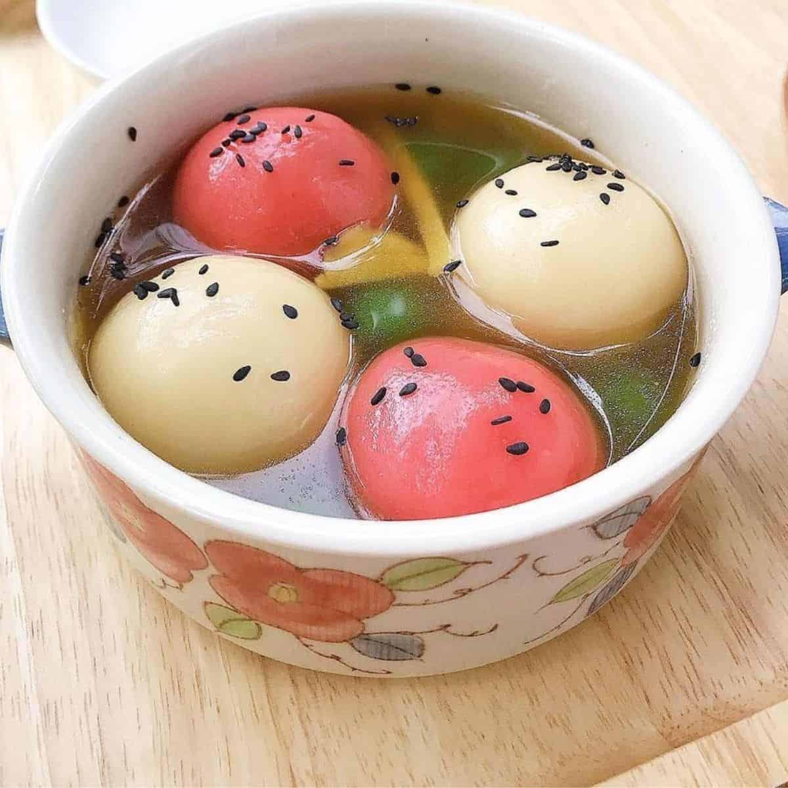

Usually eaten on the 15th day of the Lunar New Year, known as the Lantern Festival, tang yuan (湯圓) is a sweet treat that symbolizes familial unity and togetherness. It's not reserved for just the holidays, though, because it's simply too delicious to eat only a couple of times a year.
Meal prep time : 3 hours 15 minutes
Servings : 24 balls